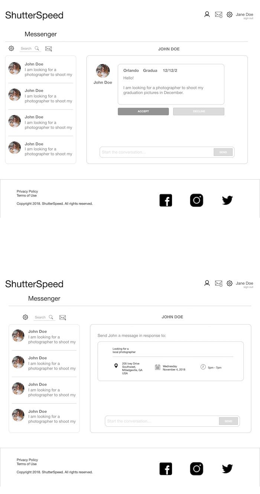
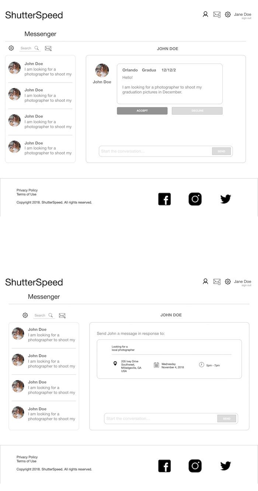
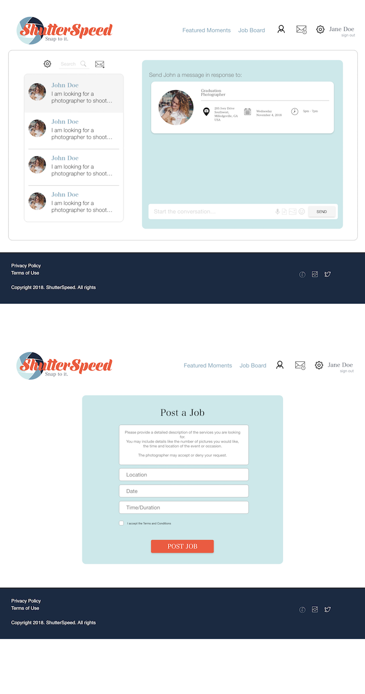
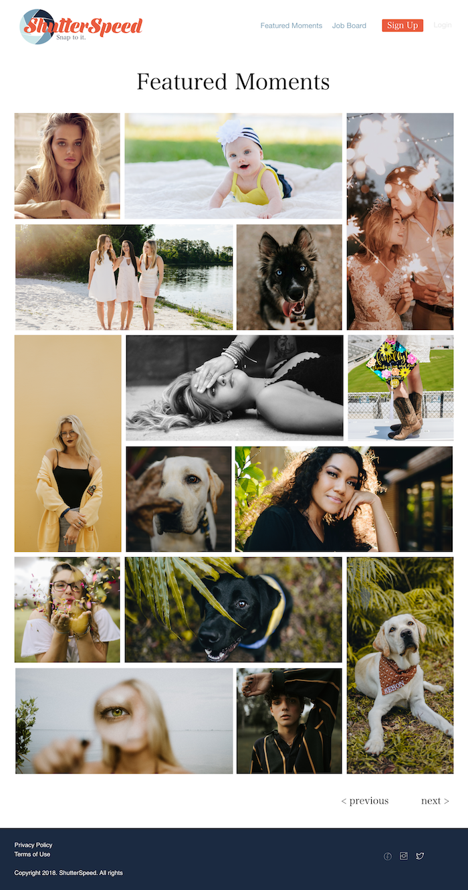
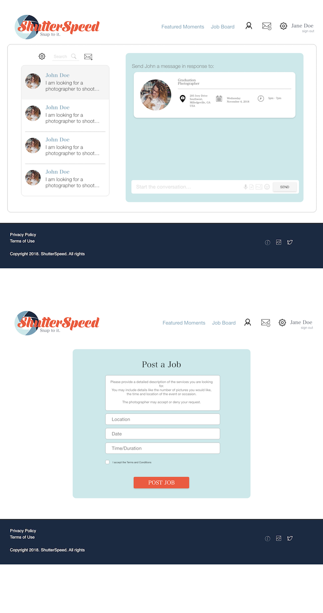
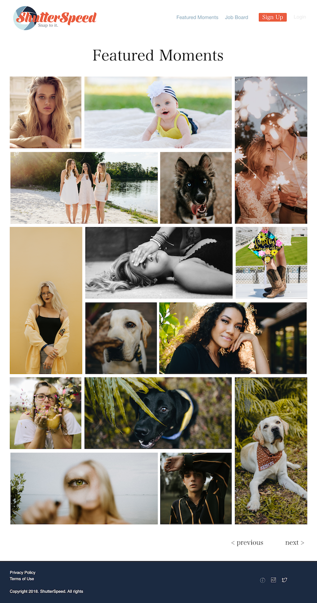

WHAT
Shutterspeed efficiently connects clients and photographers within location, price range and photographic genre. With Shutterspeed, photographers can profile themselves, showcase their work, present testimonials and connect with clients. Similarly, clients can post jobs, search and find photographers within their area and budget as well as have profiles and contact photographers.
WHY
Freelance photographers, like many small business entrepreneurs, face the obstacles of promotion and advertising while also developing a brand for themselves, connecting with their clients efficiently and doing so without fraudulent data. Photographers often have to rely on third-party applications such as Facebook or Instagram to connect with potential clients and showcase their work. This gives an unfair advantage to the more “popular” photographers, leaving other very skilled photographers in the dark. Shutterspeed treats everyone equally and is not based on ratings or popularity. Clients also may have a difficult time finding a photographer that suits them and their specs especially if they are not social media users. Word of mouth and a good SEO website is all they have in their toolbox.
WHO
Clients in need of photographers who are seeking to search with ease, security and efficiency within a budget and location. Likewise, growing photographers promoting their business, seeking clientele and have the desire to do so with security and assurance.


 



 


